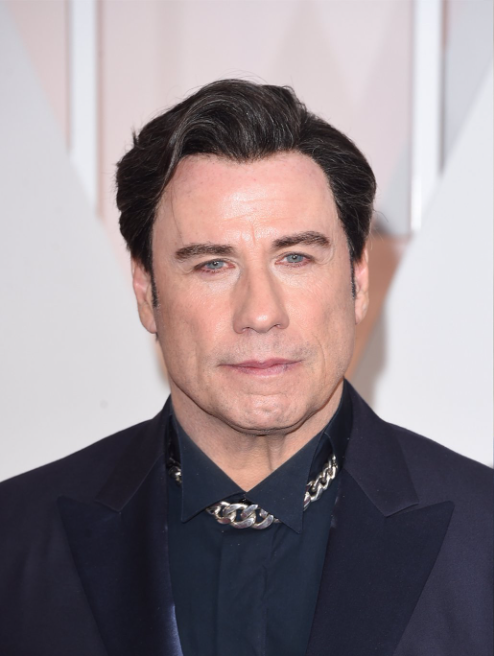

John Travolta's appearance before his rumored cosmetic procedures was quite different from what we see today. In his earlier years as an actor, Travolta had a more natural and youthful appearance. He was known for his thick head of hair, chiseled features.
However, over time, Travolta's appearance began to change. He began to experience hair loss, which he reportedly addressed with a hair transplant procedure.
After

While it is not entirely clear what specific cosmetic surgeries John Travolta has had, there have been rumors and speculations about the procedures he might have undergone.
One of the most common procedures that have been rumored is a facelift. The speculation arose due to the actor's seemingly youthful appearance despite being in his 60s. Some experts have also noted a lack of wrinkles and sagging skin around his face.